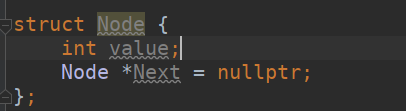
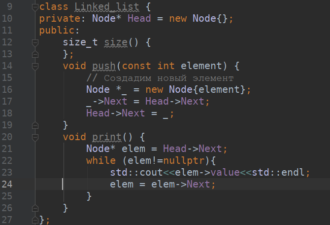

Связный список
Основное назначение связного списка — предоставление механизма для хранения и доступа к произвольному количеству данных. Как следует из названия, это достигается связыванием данных вместе в список. Прежде чем мы перейдем к рассмотрению связного списка, давайте вспомним, как хранятся данные в массиве.
Разберем реализуацию массива:
Типовым способом реализации статического гомогенного (хранящего данные одного типа) массива является следующий :
Под массив выделяется непрерывный блок памяти объёмом S*m1*m2*m3…mn,
где S — размер одного элемента, а m1…mn — размеры диапазонов
индексов (то есть количество значений, которые может принимать
соответствующий индекс).
При обращении к элементу массива A[i1, i2, i3, …, in]
адрес соответствующего элемента вычисляется
как B+S*((…(i1p*m1+i2p)*m2+…+i(n-1)p)*mn-1+inp),
где B — база (адрес начала блока памяти массива),
ikp — значение k-го индекса, приведённое к целому
с нулевым начальным смещением. Порядок следования
индексов в формуле вычисления адреса может быть различным.
Приведённый соответствует реализации в большинстве
компиляторов языка Си; в Фортране порядок индексов
противоположен.
То есть при объявлении массива сразу задается объем памяти, который нужно выделить Это значит, что для вставки нового элемента в уже заполненный массив нужно выделить новую область памяти, скопировать старые значения в новый массив и добавить то значение, которое мы хотели вставить. Выходит, что для вставки одного элемента, в определенный момент в памяти будет находиться два одинаковых массива.
Свя́зный спи́сок — базовая динамическая структура данных в информатике, состоящая из узлов, каждый из которых содержит как собственно данные, так и одну или две ссылки («связки») на следующий и/или предыдущий узел списка. Принципиальным преимуществом перед массивом является структурная гибкость: порядок элементов связного списка может не совпадать с порядком расположения элементов данных в памяти компьютера, а порядок обхода списка всегда явно задаётся его внутренними связями.
Для того, чтобы вставить новый элемент в связный список, нужно просто кинуть с последнего элемента списка ссылку на нужный элемент. То есть операции вставки занимает гораздо меньше времени чем в массиве, однако существует одна довольно важная операция в чем список проигрывает массиву.
Элемент будет представляться структурой в которой мы будем хранить нужное значение, и ссылку на следующий элемент.

Давайте напишем класс связного списка, сделаем метод вставки элемента и метод вывода данных в списке.
Вставка элемента
Предположим, что у нас уже что-то лежит в списке и мы хотим вставить новый элемент:
Hint: Узел Head не является первым элементом, первый элемент тот, на который указывает Head
Что cделать?
В этой работе вам нужно будет реализовать ряд методов к списку:- Метод, который возвращает длину списка
- Метод вставки элемента в конец списка
- Метод вставки элемента, после другого
- Метод удаления элемента
- Метод нахождения элемента значение которого, совпадает с нужным